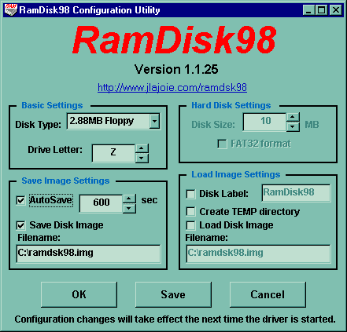

Иногда приходится
сталкиваться с ситуацией, когда загрузочные файлы на винчестере повреждены, и
система не может загрузиться. И тут приходится сталкиваться с выбором либо
снять винчестер и воткнуть его в другой системный блок, либо грузиться с
дискеты. Первый вариант слишком неудобен, второй вариант достаточно ненадежен
из-за частой поломки дискеты. Также у обоих вариантов есть недостаток: обычно
системные файлы присутствуют только от одной системы. Тут на
помощь может
прийти загрузочный компакт диск. Обычно создание загрузочного диска с одной
загрузочной записью не вызывает затруднений, большинство программ для записи
компакт дисков (CDRWIN, Easy CD creator, Nero и другие) имеют встроенную
функцию. Другое дело мультизагрузочные диски. Можно сделать загрузочную запись
на каждый вид операционной системы windows 95, windows 98, linux, os/2 и
возможно другие системы. Если систему можно загрузить с дисковода, то скорее
всего это можно сделать и с CD-ROM a.
CD-ROM позволяет эмулировать
загрузку с дискет 1'2Мб, 1 44Мб, 2'88Мб и загрузку с образа винчестера. В первом
случае загрузочная запись займет место дисковода А, а дисковод установленный в
вашей системе, станет доступен на букве В. При загрузке с образа винчестера
загрузочная запись займет букву С.
Для начала необходимо подготовить загрузочные дискеты. Возня с дискетами
дело утомительное, поэтому лучше воспользоваться программой RamDisk98.

Программа
позволяет эмулировать жесткие диски объемом до 2Гб и стандартные типы дискет.
После установки программы и перезагрузки у вас появится новая буква виртуального
устройства в системе. На рисунке показано, что создан виртуальный дисковод
объемом 2 88Мб и ему присвоена буква Z. Образ формируется в файле
c:\ramdsk98.img при перезагрузке Windows или, если вы поставили функцию
AutoSave, через каждый выбранный временной интервал. Вы работаете с данным
устройством точно также как и с реальным дисководом.
Здесь я объясню, как создать загрузочный образ дискеты с системой DOS.
Данный пример чисто теоретический и не претендует на оригинальность.
Предположим, у вас уже установлен Windows, вы заходите в DOS и вводите в
командной строке:
sys c:
z:
данная команда скопирует системные файлы с вашего диска С: на диск Z:. В
принципе этого уже достаточно, но в чистом DOS e работать не всегда удобно,
поэтому скопируем туда же какой-нибудь файловый менеджер, например DN. Что еще?
Файлы sys.com, fdisk.exe, himem.sys, может быть вам нужны будут архиваторы.
Здесь все зависит от вашего вкуса и потребностей. Конечно, запихать можно поболе
на диск объемом 2 88. И самое главное, что необходимо учесть. Некоторым
программам необходим временный каталог для работы, его следует сделать либо в
памяти (с помощью Ramdisk.sys), либо на винчестере. Без него программы
попытаются записать на диск с которого загрузились, в данном случае CD-ROM, что
у них конечно же не получится и вы увидите какое-нибудь предупреждение. В конце
концов, вы напихали все, что вам нужно на диск. Образ диска у вас будет лежать,
как показано на рисунке, в корне диска С. Сделайте столько загрузочных записей,
сколько вам нужно.
В
итоге мы имеем несколько образов image1.bin, image2.bin и т.д. Предположим,
что файлы у нас имеют номера в той последовательности, в которой вы хотите
увидеть при загрузке. Зачем это надо? Дело в том, что не все машины позволяют
иметь мультизагрузку. Все зависит от BIOS вашего компьютера. Мне встречались
машины, которые могут загрузиться только с первой загрузочной записи. Поэтому вы
должны решить какая система у вас будет первой. Допустим вы выбрали DOS7.1 и
назвали эту запись image1.bin.
Теперь
необходимо сделать ISO образ записываемой информации. Как это сделать?
Предположим, вы уже подготовили каталог, где у вас размещены файлы (речь идет не
о загрузочных файлах), которые вы хотите записать. Скопируйте в корень того
каталога все загрузочные записи, и еще один дополнительный файл bootcat.bin.
Этот файл вы можете получить из пакета cdboot. Кстати в этом пакете очень подробно
рассказывается как сделать загрузочную запись для OS/2. Для создания ISO образа
вам необходимо найти программу, которая это умеет делать - CDRWIN, Easy CD
Creator. Я предпочитаю использовать CDRWIN, поскольку мой Easy CD неправильно
создавал образ, но возможно это проблема моей beta версии. Если вы
воспользуетесь CDRWIN ом, то проверьте есть ли у вас файлы с русскими именами,
эта программа переименует в нечитаемый вид.
Небольшое
отступление. Вообще свои диски я записываю под Linux ом. Благодаря этому
появляются некоторые дополнительные функции, которые я вряд ли смогу сделать под
windows. Это проверка записанного ISO образа - вы можете подключить получившийся
образ к своей файловой системе и посмотреть, нормально ли он
сформировался:
mount -t iso9660 -o
ro,loop=/dev/loop0 image.iso /cdrom
таким образом я
узнал про глючность Easy CD Creator, образ созданный с его помощью не
подключался к системе. Вторая возможность это использовать другой формат записи
на CDROM. Те, кто работал в Linux видел, что CD диск, записанный в windows, при
монтирование к системе помечает все файлы как исполняемые, что не совсем удобно.
При записи диска в linux можно сделать совместимость и c файловой системой
windows и с файловой системой Linux - RockRidge . А чтоб не перегружаться
постоянно из Windows в Linux у меня стоит эмулятор vmware, который позволяет
запускать Windows не выходя из Linux a, т.о. всю подготовку и запись я делаю в
Linux e.
Итак, мы сделали
ISO образ и в этом образе есть все загрузочные записи. Теперь необходимо сделать
все записи в образе загрузочными. Для этого вам необходима программа mkbootcd из
пакета cdboot.
Для того чтобы
ваши загрузочные записи действительно стали загрузочными необходимо в сеансе
MS-DOS дать команду:
Здесь показано
формирование трех загрузочных записей, но никто не мешает вам сделать и более.
Запуск команды только с ISO образом (mkbootcd image.iso) покажет вам, есть ли
там загрузочные записи и сколько.
Все вы создали
образ, сделали записи загрузочными, осталось только записать образ на диск. Это
можно сделать вышеуказанными программами. Для начала я бы посоветовал сделать
запись на перезаписываемую болванку и проверить нормально ли загружаются все
записанные системы. Проверьте нормально ли работают программы, которые вы
записали и т.д. и т.п. У меня есть дома купленный мультизагрузочный диск с
антивирусной программой, вот только ни одной базы к ней не записали. Надеюсь вы
такого не сделаете.